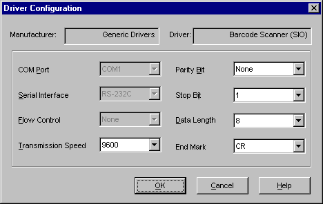
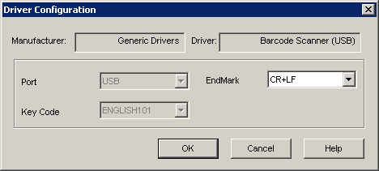

|
|
|
|
|
|
|
|
In the Navigator window's Project tab, right-click the target's IO Manager node and click New Driver.
In the New Driver dialog box, select Generic Drivers as the Manufacturer, then select the driver and type. See Appendix 5, Hardware Specifications, for target machine connections to bar code scanners.
Click OK to add the Barcode Scanner driver.

Once you click OK, the bar code's string variable is automatically created. This barcode variable is used to store data that is read from the Barcode Scanner. The barcode variable is named Barcode01 for the first bar code variable, Barcode02 for the second bar code variable, and so on for each new bar code driver created.
If you use Tab Groups, use the same barcode variable for every input in the Tab Group.
Right-click the Bar Code Scanner driver node and click Configuration to display the Driver Configuration dialog box.
Match the settings in the Driver Configuration dialog box with the communication settings required by the bar code scanner, then click OK to accept the driver settings.
The configuration settings are different for each driver.

The following table describes the Driver Configuration settings for the Serial Barcode Scanner.
|
Property |
Description |
|
Manufacturer |
Read-only property displays the equipment manufacturer. |
|
Driver |
Read-only property displays the name of the driver. |
|
COM Port |
Defines which COM port to use on the target machine for the bar code scanner. |
|
Serial Interface |
Read-only property displays the serial connection for the selected COM port. |
|
Flow Control |
Read-only property defines the signals that control the data flow. |
|
Transmission Speed |
Sets the communication speed in bits per second (bps). Available selections: 115200, 57600, 38400, 19200, 9600, 4800, 2400. Make sure the Transmission Speed between the driver and bar code scanner match. In some instances, the runtime cannot detect a scanner is connected when the speeds are different. |
|
Parity Bit |
For detecting communication errors, set the parity bit to Even, Odd, or None. |
|
Stop Bit |
Defines the stop bit (1 or 2) for communication packets. |
|
Data Length |
Defines the length of each unit of data as 7 or 8 bits. |
|
End Mark |
Defines the termination character (CR or CR+LF). This setting must match the termination character on the bar code scanner. |

The following table describes the Driver Configuration settings for the USB Barcode Scanner.
|
Property |
Description |
|
Manufacturer |
Read-only property displays the device manufacturer. For the bar code scanner, displays Generic Drivers. |
|
Driver |
Read-only property displays the name of the driver. |
|
Port |
Read-only property displays the communication port on the target machine where the bar code scanner is connected. |
|
Key Code |
Read-only property displays the English 101 keyboard character code used by the bar code scanner. |
|
End Mark |
Defines the termination character (CR or CR+LF). This setting must match the termination character on the bar code scanner. |